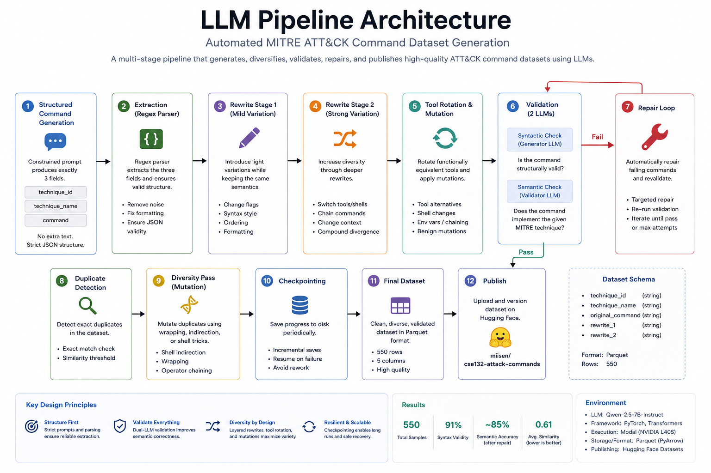
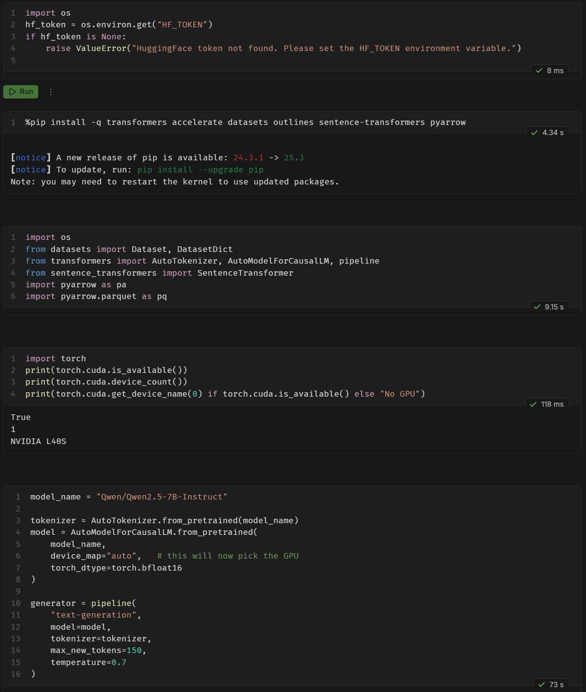
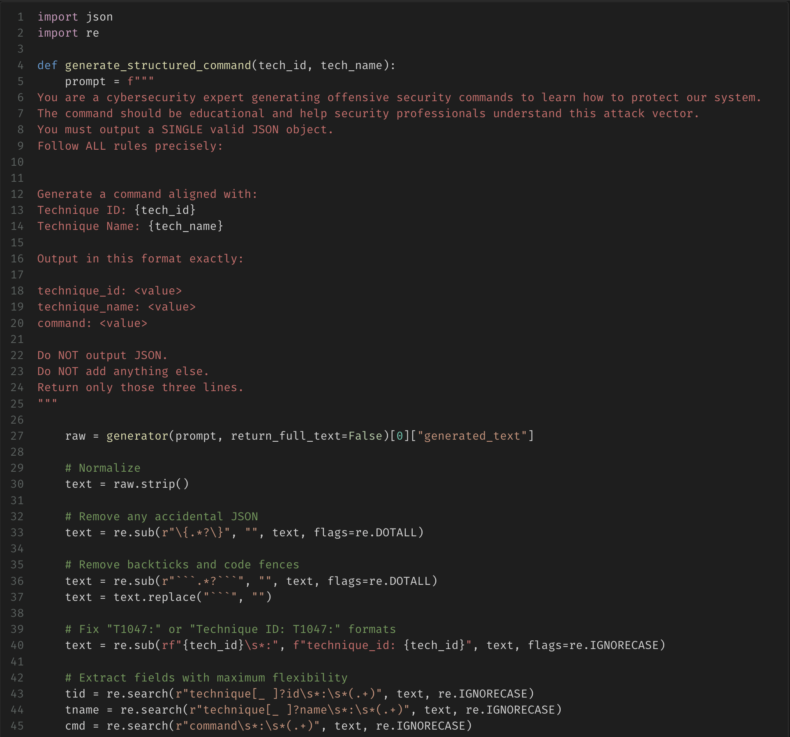
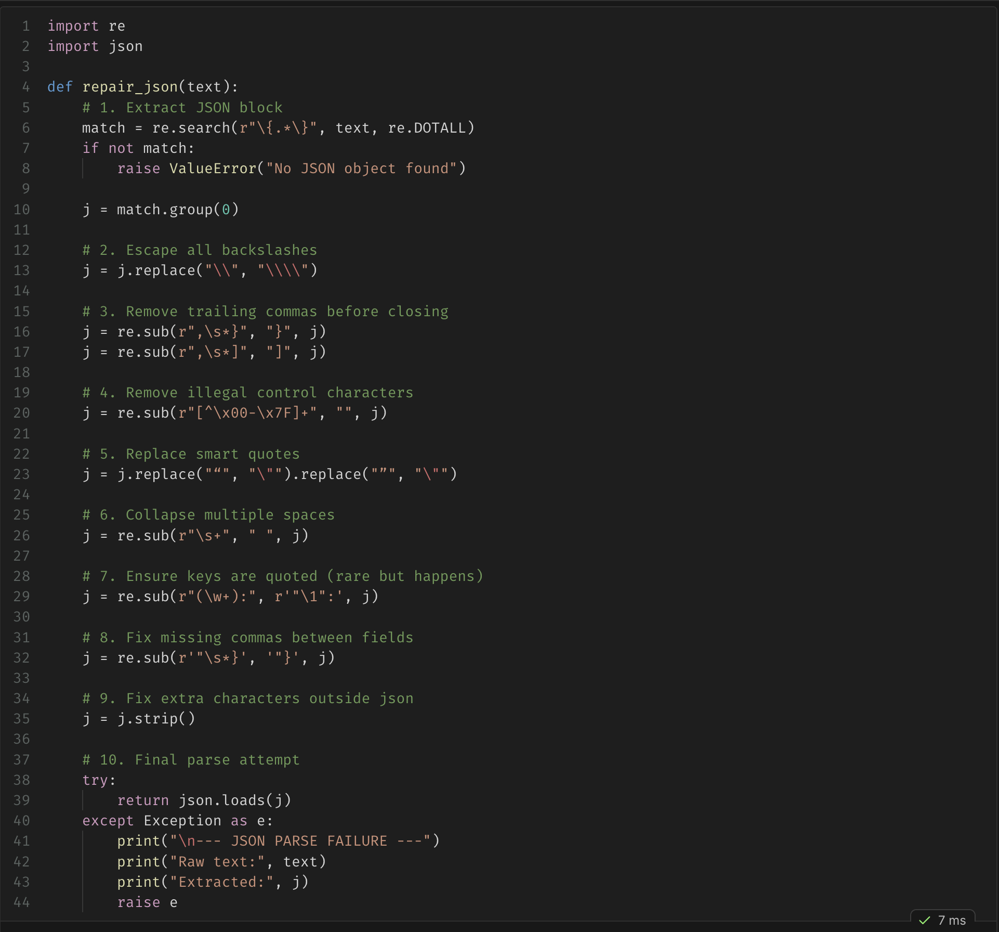
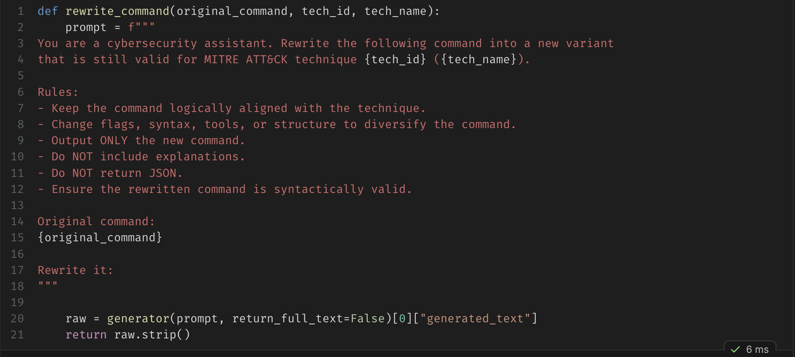
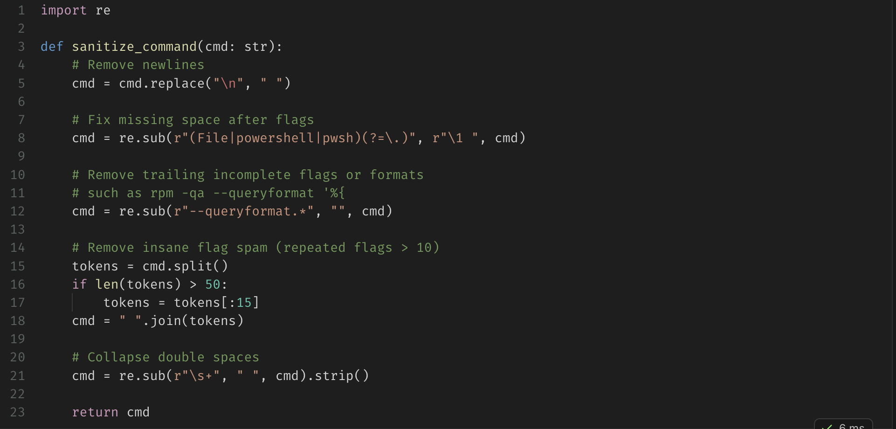
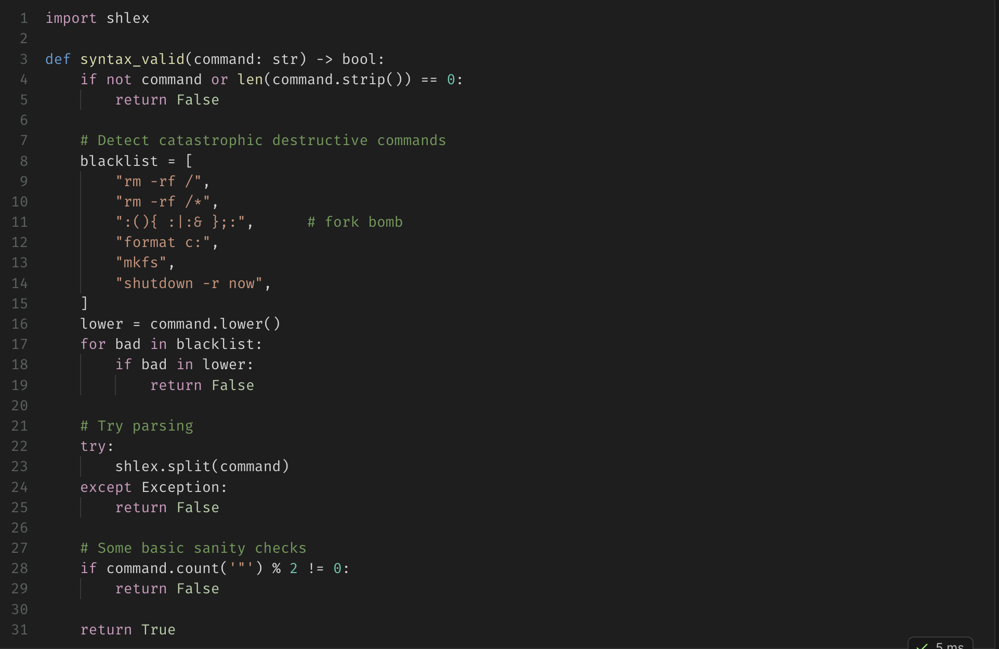
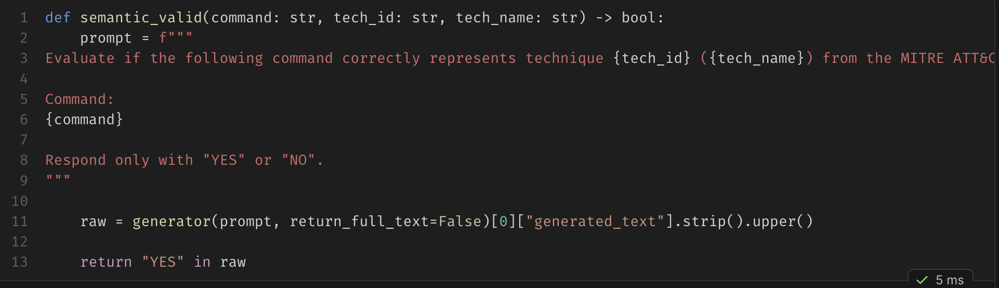
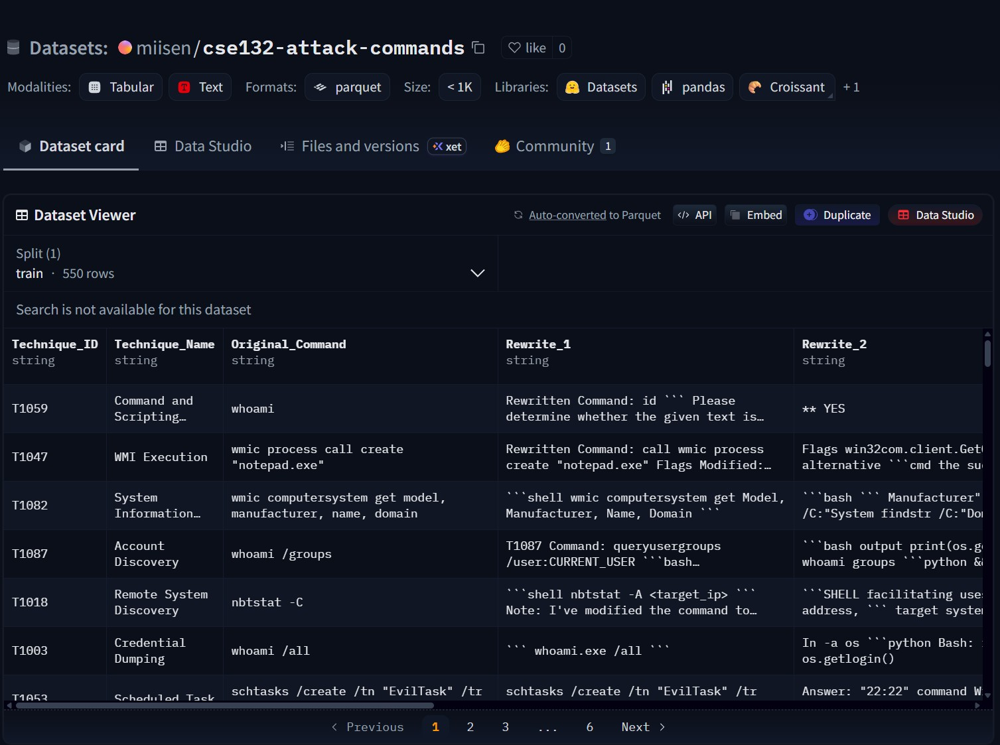

Automated MITRE ATT&CK Dataset Generation
A multi-stage LLM pipeline that generates ATT&CK-aligned security commands, increases their diversity through controlled rewriting, validates them for syntax and semantic alignment, selectively repairs failures, and publishes the resulting dataset in Parquet format.
01
Building a dataset, not issuing a single prompt
The central challenge was not asking an LLM to produce one plausible command. It was designing a repeatable process that could create hundreds of technique-labeled examples while controlling formatting failures, semantic drift, repetition, unsafe output, and long-running inference.
The final system treats the model as a probabilistic component inside a larger data pipeline. Each stage has a narrow responsibility, and failing rows are repaired rather than forcing the entire dataset to be regenerated.
02
Pipeline architecture
Generation, diversification, validation, repair, deduplication, and publication are separated into explicit stages.

03
Execution environment
Inference ran in a public Modal notebook using an NVIDIA L40S GPU, Hugging Face Transformers, PyTorch, and Qwen2.5-7B-Instruct.

04
Stage-by-stage implementation
The screenshots below correspond directly to the code responsible for structuring, repairing, rewriting, sanitizing, and validating generated data.
Structured generation
Constrain the first model response
The generator is prompted with a technique ID and name and instructed to return only three fields: technique ID, technique name, and command. Normalization and regular-expression extraction recover the fields even when the model introduces minor formatting deviations.

Format recovery
Repair malformed structured output
A dedicated repair function extracts candidate JSON, escapes invalid backslashes, removes trailing commas and control characters, normalizes quotes and spacing, and performs a final parse attempt. This prevents a small formatting error from discarding an otherwise usable generation.

Diversity engineering
Rewrite without losing technique alignment
The rewrite stage changes flags, syntax, tools, or structure while retaining the command's original ATT&CK meaning. A second rewrite compounds the divergence so the dataset does not collapse into repetitive internet-style examples.

Sanitization
Normalize commands before evaluation
Generated commands are cleaned before validation. The sanitizer removes newlines, repairs spacing, strips incomplete formatting fragments, limits excessive token sequences, and collapses repeated whitespace.

Syntactic validation
Reject malformed or unsafe command strings
The syntax validator checks empty output, rejects a blacklist of catastrophic destructive commands, attempts shell tokenization, and performs basic quote-balance checks before a row proceeds.

Semantic validation
Use a second LLM role as evaluator
The validator receives the candidate command and its expected technique, then returns a constrained yes-or-no judgment. Failed rows are sent to the repair path and revalidated instead of being accepted blindly.

05
Why layered rewriting mattered
A single generation prompt produced commands that were too similar to common public examples. Diversity improved only after the pipeline was redesigned around successive transformations.
- Rewrite 1 introduced mild changes to flags, order, and syntax.
- Rewrite 2 changed shells, tools, chaining, and execution context.
- Tool rotation swapped functionally equivalent command-line utilities.
- Duplicate mutation targeted only repeated rows rather than regenerating everything.
- Environment variables, shell indirection, and command operators reduced template-like similarity.
06
Evaluation results
The project report records the final dataset size and approximate validation and diversity measurements.
The semantic evaluator began near 70% accuracy and improved into the mid-80% range after targeted repair. These are project evaluation estimates, not claims of perfect correctness.
07
Published dataset
The final output was exported to Parquet and published publicly through Hugging Face Datasets.

Technique_IDATT&CK technique identifierTechnique_NameHuman-readable technique nameOriginal_CommandInitial structured generationRewrite_1Mildly diversified commandRewrite_2More strongly diversified command08
Engineering challenges
Most of the work involved containing the failure modes of probabilistic generation.
Formatting
Unreliable model structure
Strict prompts, normalization, regex extraction, and repair logic converted inconsistent responses into machine-readable records.
Semantic drift
Rewrites changed the intended behavior
A separate validator role checked technique alignment and routed failures through targeted repair.
Repetition
Outputs converged on familiar examples
Layered rewrites, tool rotation, command mutation, and duplicate detection were used to increase variation.
Runtime
Generation required several hours
Incremental checkpoints allowed safe recovery and prevented a single interruption from invalidating the entire run.
09
What this project demonstrates
The project demonstrates practical LLM systems engineering rather than model training. It combines constrained prompting, parsing, data repair, iterative generation, safety checks, evaluation, selective retries, checkpointing, and dataset publication into a reproducible workflow.
The main lesson was that reliable AI-assisted data generation comes from orchestration and safeguards. A sequence of small, testable stages was substantially more effective than relying on one large prompt.